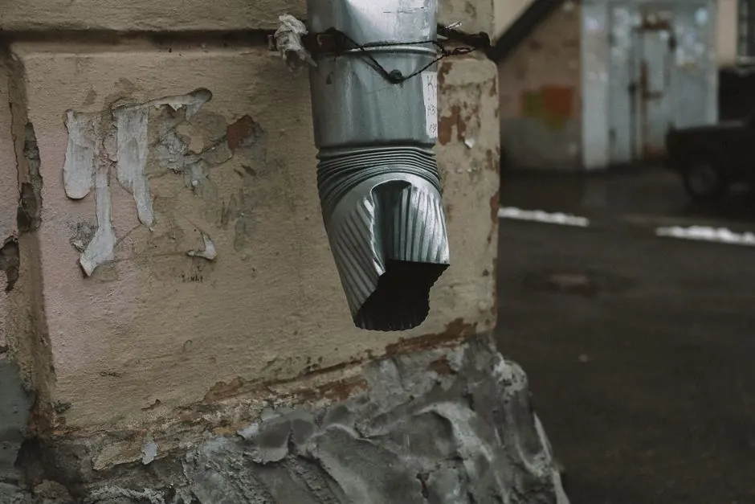
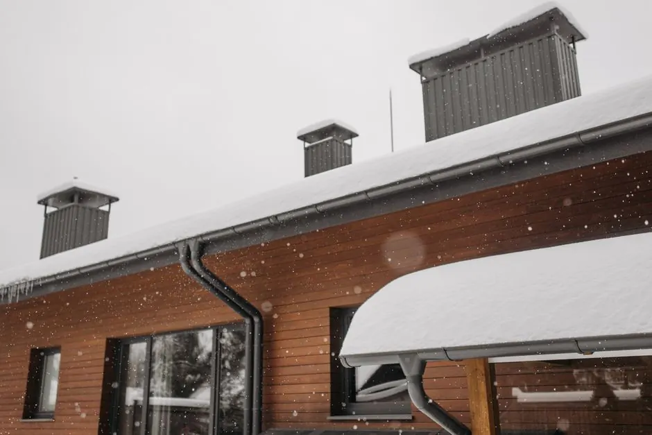

gutter cleaning Naples FL
Gutter cleaning Naples FL is essential for maintaining your home's integrity. Our Expert Gutter Cleaning in Naples, FL ensures that your gutters remain unclogged and functional, preventing water damage. With our experienced team, you can protect your property effectively.
- Licensed & Insured
- Transparent Pricing
- Same-Day Service
- 24/7 Emergency
Licensed
Licensed & Bonded
Fully Insured
Insured & Bonded
24/7 Emergency
Same-Day Response
Warranty Backed
Workmanship Guaranteed in Naples
15+
Years Local Trade
Why Choose Our Gutter Cleaning in Naples, FL
Naples Gutter Care provides expert gutter cleaning Naples FL, ensuring your gutters are clear of debris and functioning properly. Our services are designed to protect your home from water damage and overflow.
What sets us apart is our local experience and commitment to quality. We serve neighborhoods like Park Shore and Naples Park, offering affordable Expert Gutter Cleaning in Naples, FL. Our team is available for 24/7 gutter cleaning Naples FL emergencies.
3,200+
Jobs Completed
4.9★
Google Rating
24/7
Emergency Line
Our Gutter Cleaning Services
We offer comprehensive gutter cleaning services in Naples, ensuring your home is protected from water damage. Our gutter cleaning services are available for both residential and commercial properties.
Gutter Inspection
View DetailsGutter Maintenance
View Details
Gutter Repair
View DetailsGutter Leak Repair
View DetailsGutter Guard Cleaning
View Details
BBB AccreditedEPA CertifiedAngi ProHomeAdvisorNATE CertifiedGoogle Verified
Why Choose Our Expert Gutter Cleaning in Naples, FL
We stand out due to our commitment to quality and customer satisfaction. Our team is equipped with the right tools and expertise to handle any gutter cleaning job.
-
Licensed and Insured We are a licensed contractor in Florida, ensuring that all work is done to code. Our insurance protects you and your property during the cleaning process.
-
Fast Response Times We offer same-day estimates and quick service, ensuring your gutters are cleaned when you need it most. Our team is ready to assist you with 24/7 gutter cleaning Naples FL.
-
Affordable Pricing Our gutter cleaning services are competitively priced, making us the go-to choice for affordable Expert Gutter Cleaning in Naples, FL without compromising quality.

98%
Of our customers refer us within the first year.
Transparent Pricing for Gutter Cleaning
We provide clear and upfront pricing for our gutter cleaning services in Naples. No hidden fees, just honest estimates.
Basic Gutter Cleaning
$129 per job
- Debris removal
- Downspout clearing
- Gutter flushing
- Safety harness usage
Standard Gutter Cleaning
$199 per project
- All Basic features
- Gutter inspection
- Minor repairs included
- Detailed report
Complete Gutter Cleaning
$299 per project
- All Standard features
- Gutter guard cleaning
- Extended warranty
- Priority scheduling
How We Deliver Our Gutter Cleaning Service
Our service process is designed for efficiency and effectiveness, ensuring your gutters are cleaned thoroughly.
01
Initial Assessment
We begin with an assessment of your gutters to determine the best cleaning approach, ensuring we meet your specific needs.
02
Debris Removal
Our team will remove all debris from your gutters and downspouts, ensuring they are clear and functioning properly.
03
Final Inspection
After cleaning, we conduct a final inspection to ensure everything is in order, providing you with peace of mind.
Common Gutter Problems We Solve
We address various gutter-related issues that can affect your home.
01
Clogged gutters causing overflow
(Our Fix)We provide thorough gutter cleaning Naples FL to remove clogs, preventing overflow and potential water damage to your home.
02
Gutter leaks leading to water damage
(Our Fix)Our gutter leak repair service addresses leaks quickly, ensuring your home remains protected from water damage.
03
Debris buildup affecting drainage
(Our Fix)Regular cleaning and maintenance keep your gutters clear, allowing for proper drainage and protecting your foundation.
What Our Customers Say
Hear from our satisfied customers about their experiences with our gutter cleaning services.
“The team was prompt and professional. They cleaned my gutters quickly and efficiently. Highly recommend their services!”
M
Maria T.
Homeowner, Naples Park
“I had a great experience with Naples Gutter Care. They fixed my leaky gutters and provided excellent service.”
J
James R.
Homeowner, Bayview Park
“Affordable and reliable. They did a fantastic job cleaning my gutters. Will definitely use them again!”
L
Lena K.
Homeowner, Country Club of Naples
“Their team was friendly and knowledgeable. I appreciated the thorough inspection they provided after cleaning.”
T
Tom W.
Homeowner, Park Shore
“I called them for an emergency gutter cleaning, and they responded quickly. Very satisfied with the service!”
R
Raj P.
Homeowner, Naples Zoo at Caribbean Gardens
“They were very professional and did a great job. My gutters have never looked better!”
S
Sofia G.
Homeowner, Naples Park
Service Area
gutter cleaning Coverage Across Naples & Collier County
Routine and same-week appointments for residents and businesses across Collier County, including the ZIP codes below.
341033410234101341053410434106
Frequently Asked Questions About Gutter Cleaning Naples, FL
Find answers to common questions regarding our gutter cleaning services.
How much does gutter cleaning cost in Naples?
Gutter cleaning costs in Naples typically range from $129 to $299 depending on the scope of work required.
Where can I find gutter cleaning near me in Naples?
You can find our gutter cleaning services throughout Naples, including neighborhoods like Park Shore and Bayview Park.
What is the best gutter cleaning service in Naples?
The best gutter cleaning service in Naples is one that offers thorough cleaning, inspections, and reliable customer service, like our Expert Gutter Cleaning in Naples, FL.
How to choose a gutter cleaning service in Naples?
Choose a gutter cleaning service in Naples based on their reputation, customer reviews, and the services they offer, ensuring they are licensed and insured.
Is Expert Gutter Cleaning in Naples, FL available 24/7?
Yes, we offer 24/7 gutter cleaning Naples FL services for emergencies, ensuring your gutters are handled promptly.
Get Your Gutter Cleaning in Naples, FL Today
Don't wait until it's too late! Schedule your gutter cleaning Naples FL service today and protect your home from water damage.
Contact Us for Gutter Cleaning
We invite you to reach out for a free estimate on our gutter cleaning services. Our team is ready to assist you with any questions you may have.
Naples Gutter Care
-
Phone
23936731948 -
Address
239 Rail Head Blvd, Naples, FL 34110, United States, Naples, Florida
-
Hours
Mon–Fri: 7AM – 7PM
Sat: 8AM – 4PM
Sun: Emergency Only
24/7 Emergency Available